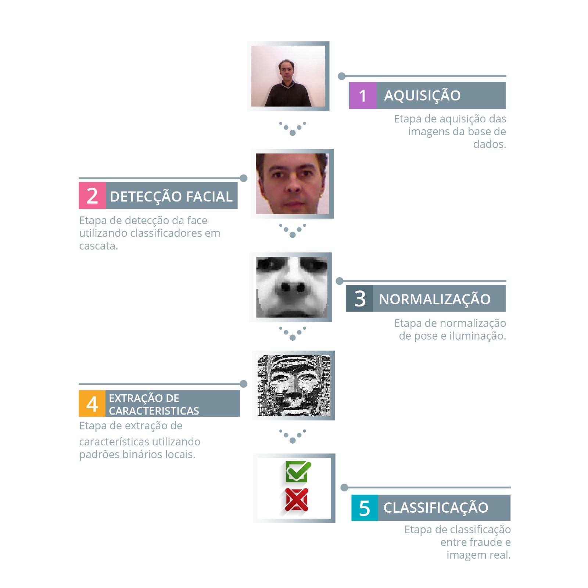
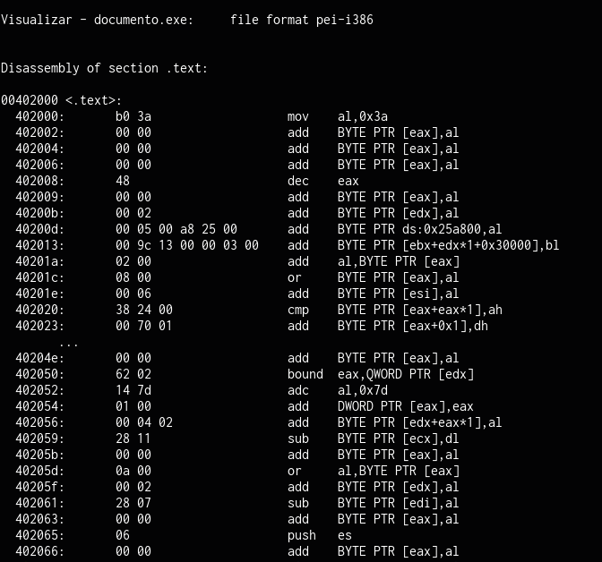
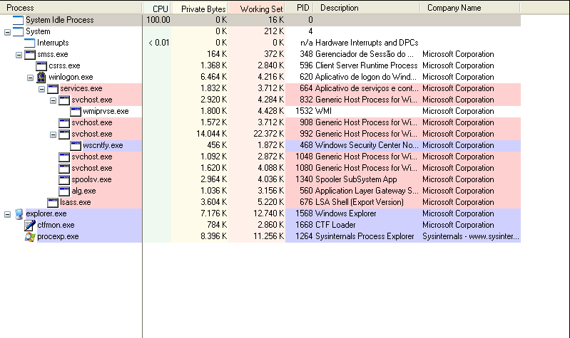
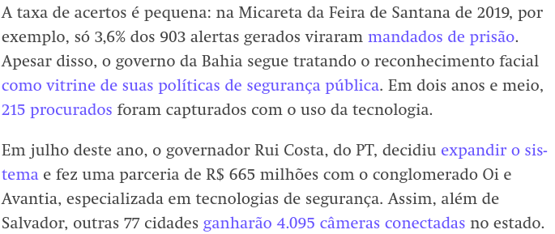
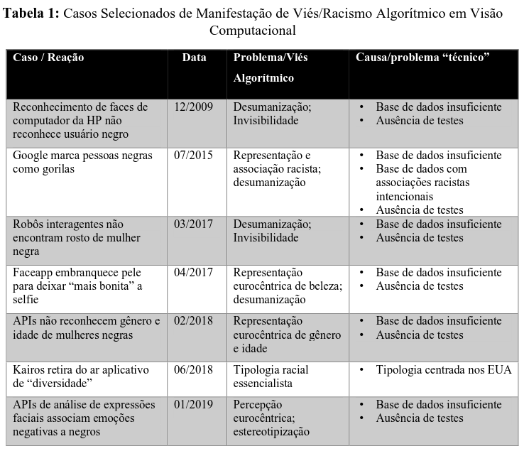
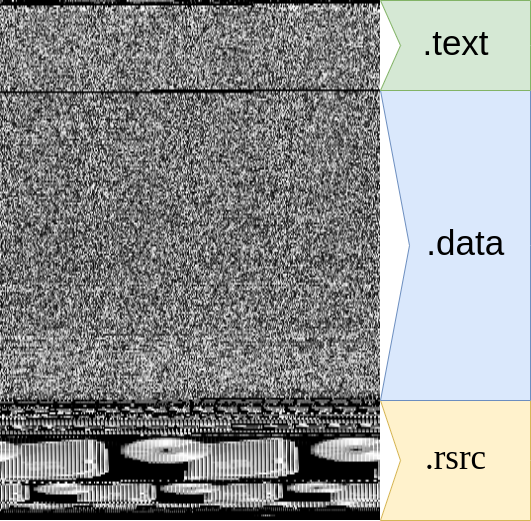
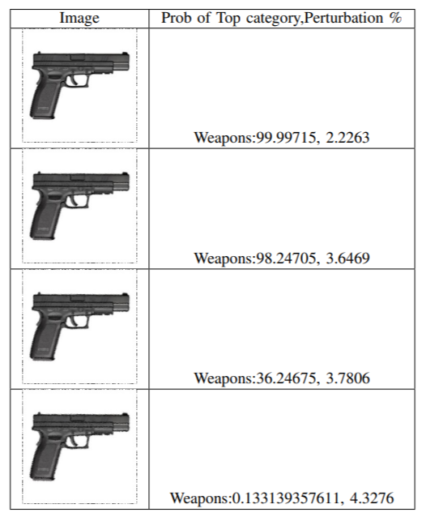
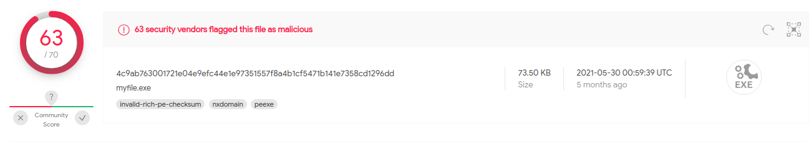
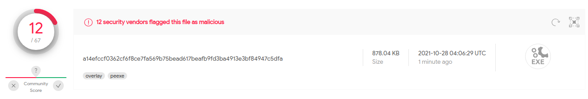

Visão s2 Forense Digital
SEMCOMP SSA - 2021
Adeilson Silva / @adeilsonsilva
Adeilson Silva
Mestrando em Ciência da Computação - PGCOMP UFBA
P&D SENAI CIMATEC - Projeto Flatfish
Tenho alguns intuitos...
Trazer novas pessoas para resolver alguns dos problemas em aberto
Caminho de segurança pra quem gosta de Visão
Levantar possíveis consequências sociais/filosóficas dessas tecnologias
Jogar dúvidas em possíveis certezas
Algumas definições importantes...
Visão Computacional
“se refere à coleta, análise e sintese de dados visuais através de computadores, com objetivos diversos como a identificação de rostos e biometria, a análise de representações de objetos, entidades, conceitos e contexto em imagens, entre outros” [1]
Imagem em escala de cinza

https://cv-tricks.com/opencv/deep-learning-image-colorization/
Imagem colorida (RGB)


https://www.kdnuggets.com/2019/12/convert-rgb-image-grayscale.html
Forense Digital
“Identificar, coletar e adquirir evidências, examinar e analisar as evidências coletadas e, finalmente, documentar e reportar observações sem comprometer a integridade dos dados” [2]
https://medium.com/@fertorresfs/confiabilidade-nos-aspectos-da-seguran%C3%A7a-da-informa%C3%A7%C3%A3o-99359a01abee
Beleza, mas... Onde eu uso isso?
Como checar se uma face é real?
Um (possível) sistema antifraudes
Contramedidas...
Como saber se uma imagem foi manipulada?
Imagem retirada de "Media Forensics and DeepFakes: an overview" [3]
Imagem retirada de "Media Forensics and DeepFakes: an overview" [3]
Como saber se um arquivo.exe é malware?
YARA
“YARA é uma ferramenta com o objetivo de (mas não limitada a) ajudar pesquisadores de malware a identificar e classificar exemplares de malware”https://yara.readthedocs.io/en/stable/
YARA
rule meu_malware_favorito
{
meta:
description = "Este é um malware perigosíssimo"
threat_level = 9999
in_the_wild = true
strings:
$a = {6A 40 68 00 30 00 00 6A 14 8D 91}
$b = {8D 4D B0 2B C1 83 C0 27 99 6A 4E 59 F7 F9}
$c = "UVODFRYSIHLNWPEJXQZAKCBGMT"
condition:
$a or $b or $c
}
Análise Estática
Análise Dinâmica
Coletar informação!
| Hash | Chamadas de sistema | Bibliotecas importadas | Processos criados | Modificações de registro |
|---|---|---|---|---|
| 006cde | 485 | 2 | 4 | 0 |
| 6c112c | 127 | 5 | 45 | 225 |
| 272163 | 2 | 0 | 1 | 1567 |
O que todas essas coisas têm em comum?
- Processos custosos
- Conhecimentos muito específicos
- Difícil de generalizar
Você não vai falar de deep learning, vai?
Vou... Por algumas razões:
- Potencializar aplicações
- Mais fácil de reproduzir/reaproveitar
- "Elimina" o especialista *
Reconhecimento Facial tornou-se muito mais fácil


http://vis-www.cs.umass.edu/lfw/results.html
Falando em Reconhecimento Facial...

Falando em Reconhecimento Facial...
https://theintercept.com/2021/09/20/rui-costa-esta-transformando-a-bahia-em-um-laboratorio-de-vigilancia-com-reconhecimento-facial/
Falando em Reconhecimento Facial...
Imagem retirada de "VISÃO COMPUTACIONAL E RACISMO ALGORÍTMICO: BRANQUITUDE E OPACIDADE NO APRENDIZADO DE MÁQUINA" [1]
Um malware pode ser uma imagem
PORÉM...
- Aquisição de dados com variação suficiente
- Geração de bases de dados sem vieses óbvios
- Custo de treino
Dá pra enganar sistemas baseados em deep learning?
Exemplos Adversariais

Exemplos Adversariais
Imagem retirada de "Enabling Trust in Deep Learning Models: A Digital Forensics Case Study" [3]
DeepFakes
Dataset com 100.000 Faces Sintéticas

https://microsoft.github.io/FaceSynthetics/
Injetando código em malwares
https://github.com/adeilsonsilva/legendary-invention
Injetando código em malwares
 https://github.com/adeilsonsilva/legendary-invention
Conclusões (?)
Especialista em várias coisas
Deep Learning é realidade ...
... mas não é bala de prata.
Possível trabalhar dois dois lados
Obrigado! Perguntas?
Referências
- SILVA, Tarcizio. Visão Computacional e Vieses Racializados: branquitude como padrão no aprendizado de máquina. II COPENE Nordeste: Epistemologias Negras e Lutas Antirracistas, p. 29-31, 2019.
- ADITYA, K.; GRZONKOWSKI, Slawomir; LEKHAC, Nhien An. Enabling trust in deep learning models: a digital forensics case study. In: 2018 17th IEEE International Conference On Trust, Security and Privacy In Computing and Communications/12th IEEE International Conference On Big Data Science And Engineering (TrustCom/BigDataSE). IEEE, 2018. p. 1250-1255
- VERDOLIVA, Luisa. Media forensics and deepfakes: an overview. IEEE Journal of Selected Topics in Signal Processing, v. 14, n. 5, p. 910-932, 2020.